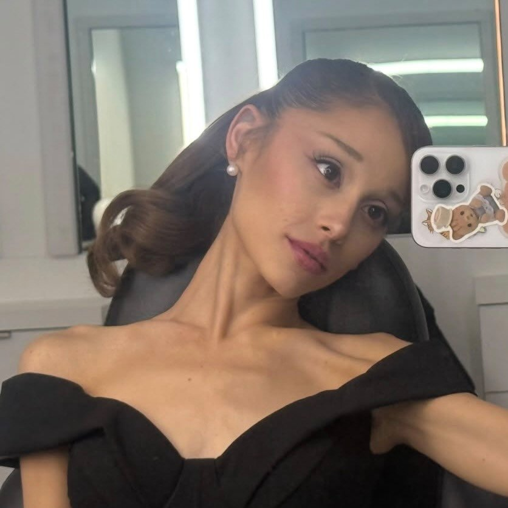

Eventos
14 Fev 2025
Mutirão de Castração – Amor Animal!
Mutirão de Castração – Amor Animal!Estamos realizando mais um mutirão para castrar gatinhos e ajudar no controle populacional com responsabilidade e amor Essa a…
ver post no Instagram ↗
31 Out 20252° Mutirão de Castração Gratuita
2° Mutirão de Castração Gratuita Destinado a pessoas e animais carentes, o mutirão foi realizado no dia 01/11, com o apoio da Vereadora Professora Daniela e do…
ver post no Instagram ↗14 Fev 2025
Mutirão de Castração – Amor Animal!
Mutirão de Castração – Amor Animal!Estamos realizando mais um mutirão para castrar gatinhos e ajudar no controle populacional com responsabilidade e amor Essa a…
ver post no Instagram ↗ 26 Set 2025
26 Set 20251° Mutirão de castração Ong Amor Aninal
1° Mutirão de castração Ong Amor Aninal Realizada através de recurso da Prefeitura de Marília Emenda parlamentar destinada pela Vereadora Professoara Daniela Da…
ver post no Instagram ↗14 Fev 2026
Nosso mutirão chegou
Nosso mutirão chegou Teremos feirinha de adoção de cães e gatos, arrecadação de ração e produtos pet para ajudar nossos animais, além de recursos destinados à c…
ver post no Instagram ↗14 Fev 2026
Mutirão de Castração – Amor Animal!
Mutirão de Castração – Amor Animal!Estamos realizando mais um mutirão para castrar gatinhos e ajudar no controle populacional com responsabilidade e amor Essa a…
ver post no Instagram ↗14 Fev 2026
Mutirão de Castração – Amor Animal!
Mutirão de Castração – Amor Animal!Estamos realizando mais um mutirão para castrar gatinhos e ajudar no controle populacional com responsabilidade e amor Essa a…
ver post no Instagram ↗